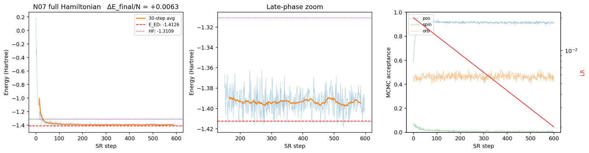

Machine learning · Neural quantum states
Neural Quantum States for Correlated Electrons
A transformer neural network that solves the quantum many-body problem — variational, GPU-accelerated, and validated to exact-diagonalization precision.

The variational energy converges below the Hartree–Fock reference (dotted) to exact-diagonalization precision (dashed) on the full multi-orbital Hamiltonian — the decisive validation test. Right panel: MCMC acceptance and the learning-rate schedule.
The quantum many-body problem — finding the ground state of many interacting electrons — is exponentially hard. Neural quantum states (NQS) attack it by representing the wavefunction as a neural network and optimizing it with variational Monte Carlo.
I built a continuum NQS solver from the ground up: a Psiformer / transformer wavefunction for a two-dimensional multi-orbital electron gas with spin–orbit coupling and long-range Coulomb interaction, optimized by variational Monte Carlo with natural-gradient (MinSR) updates and Ewald-summed interactions, running on H200 GPUs and HPC clusters.
The project is structured as an eleven-notebook ladder that adds one piece of physics at a time and validates each stage against an exact reference — exact diagonalization or published quantum Monte Carlo. The figure above shows the critical test: on the full Hamiltonian, the network reaches exact-diagonalization precision and beats Hartree–Fock by a wide margin.